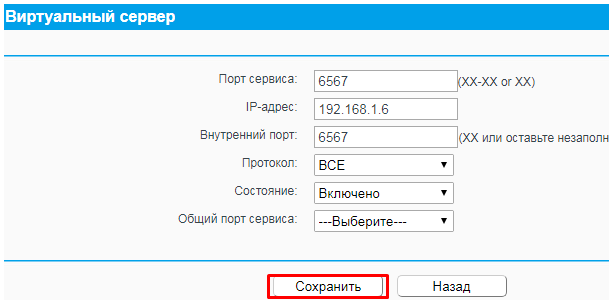
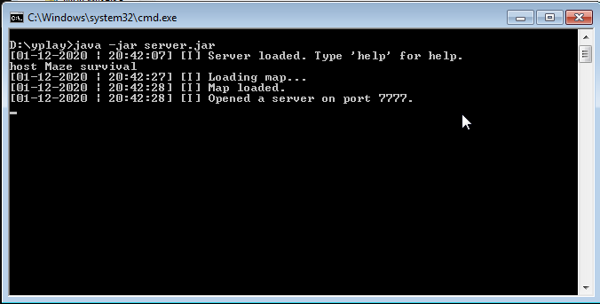
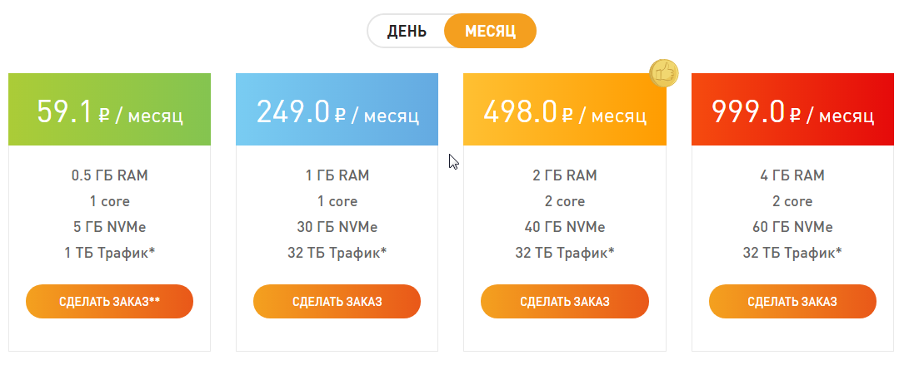

В: А как поиграть вдвоём с другом?
О: Читай ниже!
В: А как создать свой сервер?
О: Читай ниже!
В: А можно ли играть с телефона с ПК-боярами?
О: Читай ниже!
Вообще есть несколько способов игры, если быть точнее два:
1. Локальная сеть ака LAN
2. Глобальная сеть ака WAN ака всякие ваши там Интернеты.
Всё очень легко. Тебе нужно выполнить одно условие - чтобы все играющие находились в одной сети (к одному роутеру подключены, проводом связаны и т.д.). После по стандарту - хост заходит на нужную карту и `Меню ---> Открыть сервер`, а игроки подключаются в Главное меню ---> Играть ---> Сетевая игра.
Плюсы:
- Простота. Я серьёзно - с этим даже ребёнок справится.
- Пинг. Он будет минимален
- Бесплатно.
- Интернет не нужен.
Минусы:
- Нужно подходить впритык (вдали не поиграешь)
- Нельзя поставить плагины
Рассмотрим способы, как можно это сделать;
1. Качаем серверную часть (server.jar на itch.io/githiub).
2. Нужно открыть на маршрутизаторе порт 6567 (без этого никак.)
О портах поподробнее. Чтобы открыть порт, нам понадобится:
- Маршрутизатор (по-человечески роутер)
- "белый" IP
Белый IP - это когда внешний IP совпадает со внутренним. Как проверить? Заходишь в настройки роутера (для этого введи в браузере 192.168.1.1 или 192.168.0.1 (всё зависит от модели роутера)), вводим логин и пароль (написан снизу роутера), смотрим какой IP во вкладке WAN. Посмотрел? Запиши его где-нибудь. Теперь зайди на сайт 2ip.ru, и посмотри какой IP там. Запиши его тоже. Теперь посмотри на IPшники, которые ты записал. Если они совпадают, тогда поздравляю комрад, у тебя белый IP и у тебя всё выйдет! Не совпадают - соболезную - ты не можешь открыть порты, а значит и хостить.
- Прямые руки
Заходим в настройки маршрутизатора, вкладка "Переадресация/Виртуальный сервер" (или иначе, у всех по разному), и добавляем новое правило:
Порт: 6567
IP: <Укажи внутренний IP компьютера (Командная строка --> вводишь `ipconfig` --> адрес IPv4)>
Внутренний порт: <Оставим пустым>
Протокол: и то, и то
Пример: Вернёмся к server.jar. С 102 билда добавили батник, который запускает сервер автоматом - юзайте его. Откроется консоль. Вводим туда host |название_карты| |режим|
Список карт - maps. Добавить свои - папка с сервер.бат/config/maps. Если в названии есть пробелы/двоеточия и т.д. заменяем нижним подчёркиванием. Карты на русском нехостабельны.
Режимы игры:
survival - Выживание
pvp - ПвП
attack - Атака
sandbox - Песочница
Пример: Пы. Сы. Если провайдер запретил открытие порта 6567, но вы можете открыть другой (например 7777), тогда его можно изменить в настройках сервера командой config port <новый порт>
Пы. Сы. Сы. Если у вас серый IP, тогда можно будет попробовать попросить провайдера сделать белый, обычно такая услуга просто накидывает пару десятков рубликов к оплате, но зато вы станете всемогущим! Или можно получить бесплатно, как я... Но я ждал этого год.
Чтобы присоединится вводим WAN-IP. Если порт иной, не 6567, вводим его через двоеточие Пример: ХХХ.ХХ.ХХХ.ХХ:7777
Плюсы:
<- Играть можно на расстоянии.
- Возможность использования скриптов и плагинов.
- Можно почувствовать себя в шкуре админа. Ю-ху!
- Можно похвастатся тем, что у тебя "счастливый" IP-адрес!
- Зато бесплатно (если повезёт и доп. платы не будет)
Минусы:
- Сложно. Не каждому это дано...
- Сервер будет тянуть ресурсы шайтан-хост-машины
- Нужно хорошее и стабильное подключение к Интернету, иначе пинг будет огромным.
- Жизнь хост-машины = жизнь сервера. Помни это, Люк...
Всё лёгко. Первый создаёт в программе сеть, другие подключаются к сети. Процесс хоста и подключения такой же, как и в способе с LAN, но можно и как с WAN, но нафиг нужны лишние заморочки?
Плюсы:
- Бесплатно
- Легко
Минусы:
- Пинг до 300мс
- Есть ограничение до 5 человек
- Только для ПК.
Пы. Сы. Для умников, которые говорят что "А хумачи есть в плый марките!!11!" могут сворачиватся - тот LogMein НЕ эмулятор локальных сетей.
Просто платите шекели в месяц, ставите JRE, screen и наслаждаетесь жизнью. Например, petruchio.org.ru использует сервис vdsina.ru (Самые дешёвые тарифы ниже)
Плюсы:
- Особо парится не надо.
- Нет нагрузки на вашу шайтан-машину
Минусы:
- Для богатых буржуев, деньги не у всех есть
- Если выбран говно-хост тогда он возможно будет регулярно падать.
Без комментариев
Плюсы:
- Хороший игровой опыт, когда каждый что-то делает
- Можно научится играть, завести новых знакомых
Минусы:
- Админом ты будешь вряд ли
- Сам карту/плагин/мод не поставишь
- Есть риск встретить токсика/грифера и т.д.
Там как-то можно играть, но я хз как, на вики петручио всё описано, идите туды, вот ссылочка.
Покупаешь игру в стиме, зовешь друга и играешь.
Плюсы:
- Легко
- Можно почувствовать себя аристократами
Минусы:
- Нужно покупать игру, как-никак
1. Могут ли ПК-бояре играть с игроками с телефонов?
- Игра кроссплатформенная. Т.е. могут играть вместе Ведроиды, Линуксы, Шиндоусы, Яблочники (и те, и те), да хоть с чайника играй, все в месте будете. Кратко говоря - можно.
2. Не могу подключится к серверу, что делать?
- Узнай, работает сервер или нет.
- Если хост ты, проверь подключение к Интернету, если открыл порты - проверь правильность открытия
- Попробуй обновить игру, если она не последней версии.
- На сервере включён вайтлист, т.е. только вписанные игроки могут войти
- Ты просто заъанен к чертям.
3. Как ставить моды?
- Импортировать с GitHub - Разработчик/Название мода на гите (Пример: Slava0135/Refactorium)
- Импортировать с файла - ищи зипку на устройстве.
4. Как создавать моды?
- Это уже другая история. Есть инглишевский гайд от разраба, есть петручевский. Могу свой запилить, но зачем?
5. Нафиг нужна стартовая площадка?
- Она тратит нергию, копит ресы а потом раз в n-секунд отправляет накопленное сразу в древо технологий.
Наверх